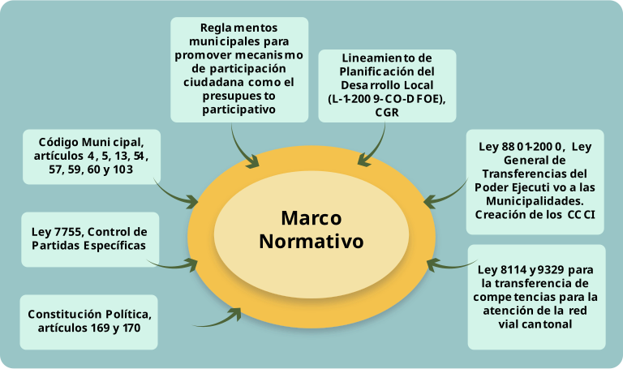

Etapa diagnóstica y de consulta
Sembrando las ideas
Paso 5:
Proceso de consulta ciudadana
El proceso de consulta ciudadana permite conocer las opiniones, necesidades y propuestas de la comunidad para que el plan de desarrollo municipal responda a las aspiraciones locales.
Este momento clave involucra a los actores comunitarios y fortalece la participación ciudadana. Como mencionan Miranda y Matos (2002),
Cuanto más fuerte sean las organizaciones de base, mayor será el éxito del proceso de planificación y de gestión de planes de desarrollo sostenibles. La creación de instancias deliberativas formales (consejos, foros) es necesaria, pero no suficiente. Cuanto mayor sea el adelantamiento de las organizaciones de base y su representación en las instancias deliberativas, mayor será la posibilidad de que éstas permanezcan en el tiempo y mejores los resultados alcanzados. (p. 24).
¿Cómo elaborar el proceso de consulta y diagnóstico participativo?
1. Convocar a la comunidad
Los representantes de los concejos de distrito tienen un papel importante en la definición de propuestas de desarrollo al incorporarse en el PDM. Para ello, se efectúan actividades que permitan la participación más amplia de todas las autoridades distritales, municipales, organizaciones del cantón y de la ciudadanía en general, a fin de recolectar información que retroalimente lo hasta ahora realizado.
El trabajo de los consejos de distrito está respaldado por un marco normativo sólido. Considere la siguiente figura:
Figura 2. Marco normativo que legitima la labor de los concejos de distrito

Fuente: Elaboración propia
2. Agenda de distrito ampliada
Para iniciar este proceso, se convoca al taller participativo denominado “Agenda de Distrito Ampliada”, que reúne a todos los actores de la ciudadanía de un distrito, incluso organizaciones comunales, organizaciones no gubernamentales (ONG), fundaciones y otros grupos con personería jurídica y documentos en regla.
Propósito
El propósito de esta actividad es que cada concejo de distrito reflexione sobre cómo visualiza el desarrollo de su distrito y cantón, cómo debería ser el papel de la municipalidad y cómo otros actores pueden integrarse solidariamente en la construcción de un cantón deseable.
Actividades
- Rendición de cuentas de las labores efectuadas tanto por la alcaldía como por los miembros de los concejos de distrito.
- Análisis y valoración de demandas, necesidades y requerimientos para potenciar el desarrollo comunal, que se traducen en posibles proyectos por incorporar en los planes institucionales como el PDM y en los presupuestos ordinarios.
Responsabilidades
La responsabilidad de este proceso recae en las autoridades de los concejos de distrito, quienes deben convocar a los actores comunales y liderar la organización y ejecución de estas asambleas.
¡Importante!
- Un PDM es un ejercicio prospectivo en el cual se sueña con un territorio mejor, pero a la vez es un ejercicio práctico donde se diseñan instrumentos de planificación viables que, efectivamente, permitan convertir el territorio (cantón) deseado en un territorio posible.
- La elaboración del PDM debe ser el resultado de un ejercicio técnico y participativo que consulte los actores involucrados en el desarrollo.
- El PDM no debe partir de cero ni diseñarse sin bases sólidas; se requiere considerar las políticas e instrumentos elaborados en la municipalidad, previamente, y en otros niveles de gobierno.
Estrategias sugeridas
- Espacios de reflexión guiada
-
Incluya preguntas en talleres o reuniones técnicas como las siguientes:
- ¿Qué nos dice el diagnóstico sobre la capacidad real de gestión de nuestra municipalidad?
- ¿Qué factores externos podrían afectar (positiva o negativamente) el cumplimiento de nuestros objetivos?
-
Dinámicas participativas:
- Taller FODA con funcionarios
- Muro de ideas ciudadanas
- Mapeo colectivo
Reflexione
- ¿Qué tan preparada está la municipalidad para responder a los desafíos identificados?
- ¿Qué alianzas podríamos activar?
Resultados esperados
- Un informe con las principales demandas ciudadanas por distrito.
- Lista de propuestas y proyectos sugeridos por la comunidad.
- Mayor compromiso y confianza entre municipalidad y población.
Con un proceso de consulta participativo y que se integra con el análisis diagnóstico, el PDM se construye como un reflejo de las necesidades y aspiraciones colectivas, aumentando sus posibilidades de éxito en la implementación.
Recurso adicional
Se recomienda consultar el curso Gestión Distrital del Desarrollo, del IFCMDL, en la plataforma Academia Municipal, de la UNED. Las unidades 2 y 3 de este curso, relacionadas con la realidad distrital, incidencia política y la planificación del desarrollo del distrito, ofrecen un mayor detalle sobre los alcances del diagnóstico distrital y las funciones, competencias, responsabilidades y procedimientos para llevar a cabo las agendas ampliadas de distrito.